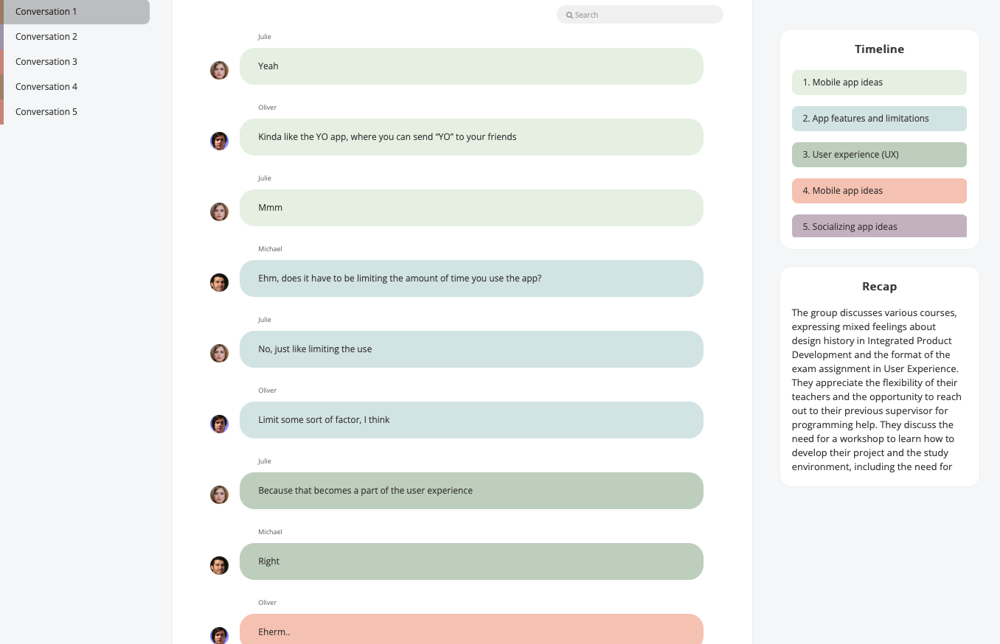
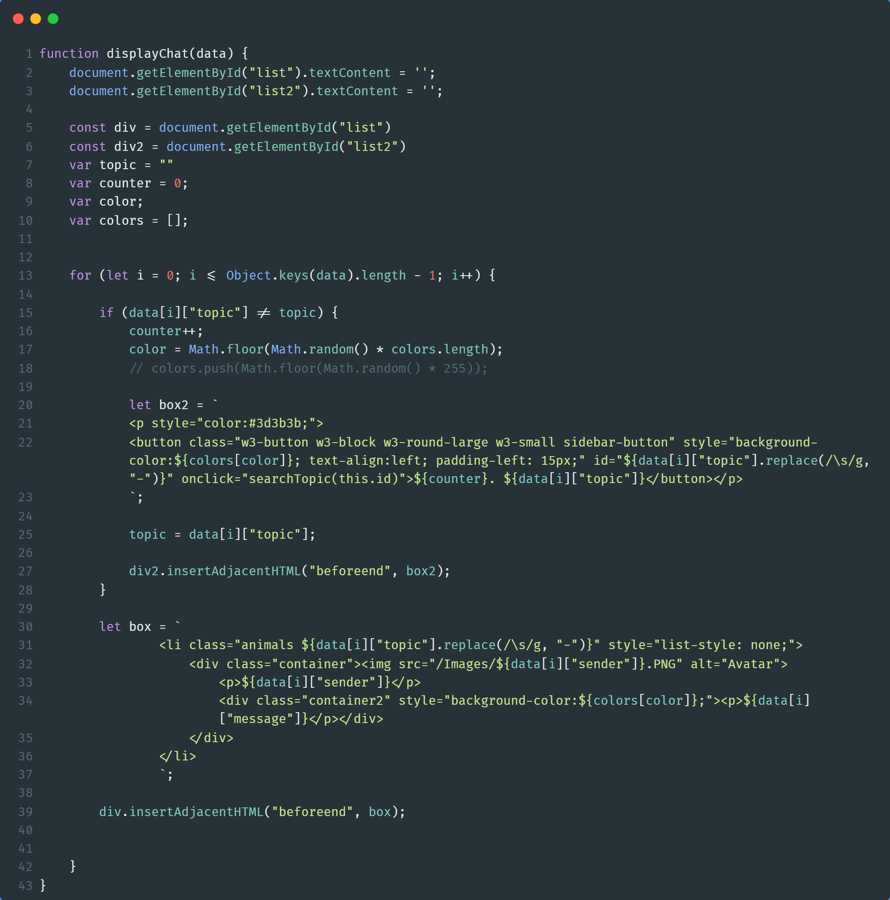

Chat Recap
An AI-powered meeting recap tool built to help absent students catch up on collaborative sessions. The system transcribes conversations, uses the GPT API to categorize dialogue into topics, and presents everything through a chat-style web interface with an auto-generated summary.
Project Details / Background
Designed to bridge the gap between absent and attending university students, ChatRecap is an intelligent recap and topic generator for group meetings. A physical recording device captures conversations, which are then processed by GPT-3.5-Turbo to automatically categorize dialogue into topics and generate a summary. The result is displayed in a familiar chat-style web interface with a color-coded topic timeline.
The project followed an adapted double diamond design process, moving from initial research on student absenteeism through two rounds of prototyping and user evaluation. Key insights, like preferring a timeline over a flat recap, and valuing the unbiased verbatim record over a human-written summary, directly shaped the final design.
Image Gallery

Chat Recaps interface with a theme sperated timeline and a recap of the recorded conversation
Example of the javascript code used to populate the prototype